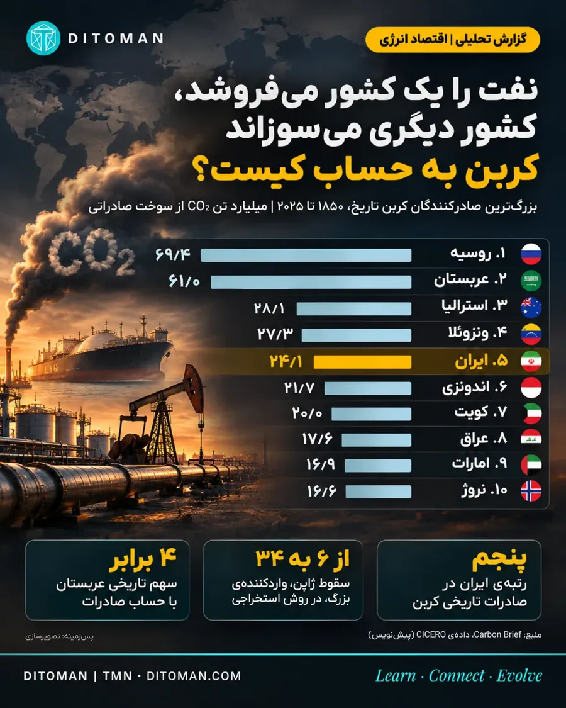
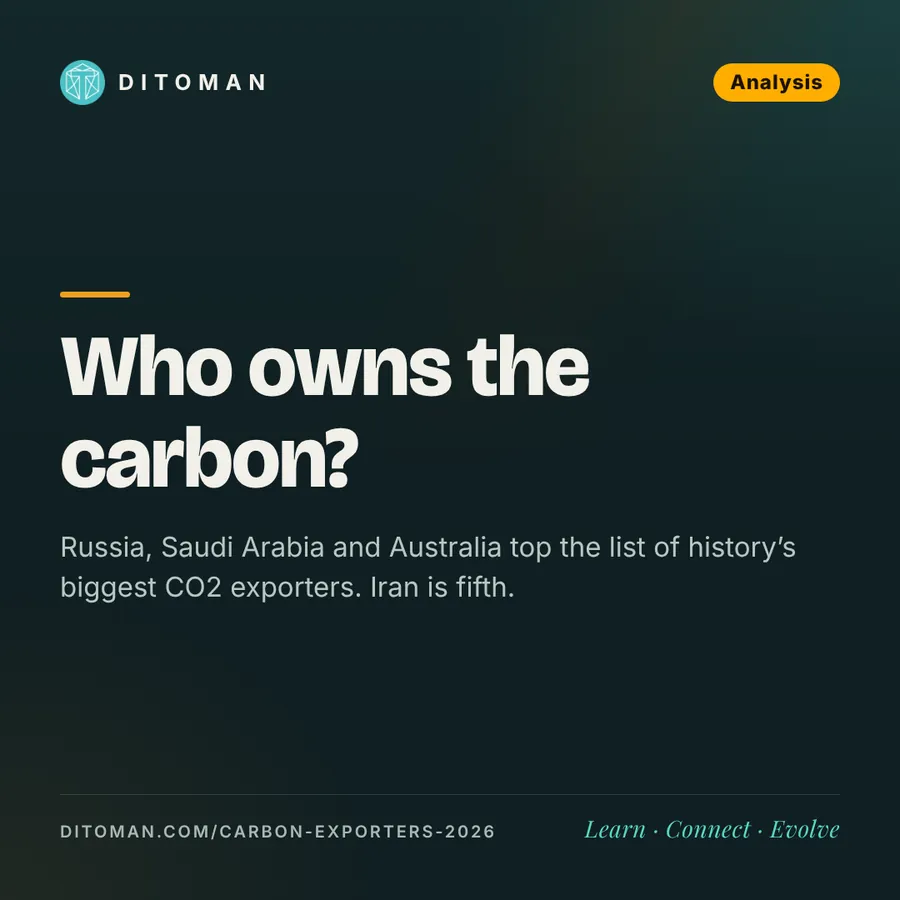

نفت را یک کشور میفروشد، کشور دیگری میسوزاند؛ کربن به حساب کیست؟
One country sells the oil, another burns it: whose carbon is it?
ایران در میان پنج صادرکنندهی بزرگ تاریخی کربن؛ نگاهی به اقتصاد پنهان آلودگی، شغل، قانون و آینده
Iran among the five largest historical carbon exporters: the hidden economy of pollution, jobs, law and the future
نفت را یک کشور استخراج میکند، کشور دیگری میسوزاند و گرمایش به همهی دنیا میرسد. پژوهش تازهی Carbon Brief میپرسد اگر کربن را به حساب کشوری بنویسیم که سوخت را از زمین بیرون آورده، نقشهی مسئولیت جهان چه شکلی میشود؟ ایران در این فهرست پنجم است.
1. خبر چیست؟
مؤسسهی تحلیلی Carbon Brief در ۱۷ نوامبر ۲۰۲۶ (۲۶ آبان ۱۴۰۵) پژوهشی منتشر کرد که دیاکسیدکربن حاصل از سوختهای فسیلی صادراتی را از ۱۸۵۰ تا پایان ۲۰۲۵ حساب میکند. دادهها از رابی اندرو، پژوهشگر ارشد مؤسسهی اقلیمی CICERO نروژ است و نسخهی پیشنویس است.
نتیجه: روسیه، عربستان و استرالیا بزرگترین صادرکنندگان کربن تاریخاند و ایران پنجم است.
| رتبه | کشور | CO₂ حاصل از سوخت صادراتی (میلیارد تن، ۱۸۵۰ تا ۲۰۲۵) |
|---|---|---|
| ۱ | روسیه | ۶۹٫۴ |
| ۲ | عربستان سعودی | ۶۱٫۰ |
| ۳ | استرالیا | ۲۸٫۱ |
| ۴ | ونزوئلا | ۲۷٫۳ |
| ۵ | ایران | ۲۴٫۱ |
| ۶ | اندونزی | ۲۱٫۷ |
| ۷ | کویت | ۲۰٫۰ |
| ۸ | عراق | ۱۷٫۶ |
| ۹ | امارات | ۱۶٫۹ |
| ۱۰ | نروژ | ۱۶٫۶ |
جمع این ده کشور حدود ۳۰۳ میلیارد تن است، یعنی نزدیک ۱۶٪ کل CO₂ فسیلی تاریخ بشر (حدود ۱٬۸۸۷ میلیارد تن).
2. سه روش برای نوشتن یک «صورتحساب»
فرض کنید استرالیا زغالسنگ به چین میفروشد، چین با آن برق تولید میکند و گوشی میسازد و یک اروپایی گوشی را میخرد. کربن مال کیست؟
| روش | کربن به حساب کیست؟ | چه کسی از آن استفاده میکند؟ |
|---|---|---|
| سرزمینی | کشوری که سوخت را میسوزاند (چین) | روش رسمی سازمان ملل و توافق پاریس |
| مصرفی | کشوری که کالا را مصرف میکند (اروپا) | پژوهشگران؛ منطق مالیات کربن مرزی اروپا |
| استخراجی | کشوری که سوخت را استخراج کرده (استرالیا) | پژوهش تازهی Carbon Brief |
مقدار کربن در هوا تغییر نمیکند؛ فقط روش تقسیم مسئولیت عوض میشود. به قول رابی اندرو، مسئولیت «مشترک میان استخراجکنندگان، تولیدکنندگان و مصرفکنندگان» است.
3. تصور عمومی تا امروز چه بود؟
بیشتر مردم وقتی به «بزرگترین آلایندهها» فکر میکنند، دودکشها را میبینند: آمریکا، چین، اروپا و هند. دلیلش ساده است: همهی آمارهای رسمی اقلیمی سرزمینیاند. در این نگاه:
- عربستان میگوید فقط حدود ۱٪ انتشار تاریخی جهان در مرزهایش رخ داده است، و آمار Our World in Data هم همین را نشان میدهد
- استرالیا را بیشتر با ساحل و طبیعت میشناسند، نه با زغالسنگ؛ اما سوختهای فسیلی حدود دو پنجم صادراتش را تشکیل میدهند
- ژاپن که تقریباً همهی سوختش وارداتی است، در روش سرزمینی ششم و در روش استخراجی سیوچهارم است
پژوهش تازه این تصویر را کاملتر میکند، نه وارونه: آمریکا و چین در هر دو روش هنوز بیشترین سهم تاریخی را دارند.
4. صادرات بیشتر از مصرف داخلی
جالبترین مقایسه، کربن صادراتی هر کشور در برابر کربنی است که خودش در داخل مرزها منتشر کرده است:
| کشور | CO₂ صادراتی (میلیارد تن) | CO₂ داخلی تاریخی (میلیارد تن) | نسبت |
|---|---|---|---|
| نروژ | ۱۶٫۶ | ۲٫۸ | ۵٫۹ برابر |
| کویت | ۲۰٫۰ | ۳٫۹ | ۵٫۱ برابر |
| عربستان | ۶۱٫۰ | ۱۸٫۶ | ۳٫۳ برابر |
| ونزوئلا | ۲۷٫۳ | ۸٫۲ | ۳٫۳ برابر |
| عراق | ۱۷٫۶ | ۵٫۸ | ۳٫۰ برابر |
| امارات | ۱۶٫۹ | ۵٫۹ | ۲٫۸ برابر |
| استرالیا | ۲۸٫۱ | ۲۰٫۴ | ۱٫۴ برابر |
| ایران | ۲۴٫۱ | ۲۲٫۶ | ۱٫۱ برابر |
| روسیه | ۶۹٫۴ | ۱۲۳٫۶ | ۰٫۶ برابر |
انتشار داخلی از Our World in Data (۱۸۵۰ تا ۲۰۲۵)؛ نسبتها محاسبهی دیتومان است.
نروژ نمونهی جالبی است: کشوری با برق تقریباً تمام آبی و یکی از بالاترین سهمهای خودروی برقی جهان، که نزدیک شش برابر انتشار داخلیاش کربن صادر کرده است.
ایران وضع متفاوتی دارد: صادرات و مصرف داخلیاش تقریباً برابر است، چون بخش بزرگی از نفت و گازش را خودش مصرف میکند؛ از نیروگاهها تا خودروها و صنعت.
5. چرا بیشترین سهم مال این کشورهاست؟
- زمینشناسی: بزرگترین ذخایر نفت و گاز جهان در خلیج فارس، روسیه و ونزوئلا است؛ استرالیا و اندونزی ذخایر عظیم زغالسنگ دارند
- جمعیت کم و ذخیرهی زیاد: کویت، امارات، قطر و نروژ مصرف داخلی محدودی دارند و بیشتر تولید صادر میشود
- تاریخ: رابی اندرو یادآوری میکند که نفت خاورمیانه در اصل برای قدرتهای غربی توسعه داده شد؛ بخش بزرگی از تصمیمهای استخراج قرن بیستم را شرکتهای خارجی گرفتند
- طول زمان: روسیه (با سهم شوروی) و ایران از اوایل قرن بیستم صادرکننده بودهاند؛ هر دهه به جمع تاریخی اضافه میکند
6. کمترین سهم مال چه کشورهایی است؟
- واردکنندگان بزرگ: ژاپن (از ششم به سیوچهارم)، آلمان، فرانسه، هند و ترکیه در روش استخراجی پایین میآیند، چون سوخت را وارد کردهاند
- کشورهای کممصرف و بیذخیره: بیشتر کشورهای آفریقایی، آسیای جنوبی و جزیرههای کوچک، که هم سهم کمی از استخراج دارند و هم از مصرف، اما از گرمایش بیشترین آسیب را میبینند
- سرانه: در حساب سرانه، صادرکنندگان کوچک بالای جدولاند: برونئی، کویت، قطر، نروژ و ترینیداد و توباگو
7. حساب مالی: چه کسی درآمد کسب کرد؟
- درآمد صادرات نفت ۲۰۲۴ (اوپک): عربستان ۲۲۳ میلیارد دلار، ایران حدود ۴۶٫۸ میلیارد دلار (۱۴٪ بیشتر از سال قبل) و کل اوپک ۶۵۲ میلیارد دلار
- استرالیا: سوخت فسیلی حدود دو پنجم صادرات؛ معادن زغال تأییدشدهای دارد که میتوانند تا ۲۰۸۸ کار کنند
- هزینهی پنهان: اقتصاددانها برای خسارت هر تن CO₂ عددی به نام «هزینهی اجتماعی کربن» حساب میکنند. اگر رقم ۱۹۰ دلاری آژانس محیط زیست آمریکا (۲۰۲۳) را برای ۲۴٫۱ میلیارد تن صادراتی ایران به کار ببریم، حاصل حدود ۴٫۶ تریلیون دلار خسارت جهانی است. این عدد فقط برای نشان دادن مقیاس است: این رقم به سال انتشار، نرخ تنزیل و مدل بستگی دارد و دولت آمریکا در ۲۰۲۵ استفاده از آن را کنار گذاشت
نتیجه: درآمد صادرات در بودجهی کشور صادرکننده ثبت میشود، اما هزینهی گرمایش در ترازنامهی هیچ کشوری ثبت نمیشود. همین «اقتصاد پنهان آلودگی» است.
8. محیط زیست: آسیب کجاست؟
- گرمایش جهانی: هر تن CO₂ به کسری از یک درجه گرمایش منجر میشود. ۲۰۲۶ حدود ۱٫۵ درجه گرمتر از پیشصنعتی است و ۲۰۲۷ احتمالاً گرمترین سال ثبتشده با حدود ۱٫۷ درجه خواهد بود
- آسیب محلی صادرکننده: مشعلسوزی، نشت متان، آلودگی آب و خاک اطراف میدانها و معادن در خود کشور صادرکننده میماند، هرچند CO₂ سوختن در جای دیگری ثبت میشود
- نابرابری: کشورهایی با کمترین سهم در استخراج و مصرف، مثل جزیرههای کوچک و بخش بزرگی از آفریقا، بیشترین آسیب را از بالا آمدن دریا، خشکسالی و گرما میبینند
9. شغلها: چه از بین رفت، چه ساخته شد؟
- کل اشتغال انرژی جهان در ۲۰۲۴: ۷۶ میلیون نفر، با رشد ۲٫۲٪ (تقریباً دو برابر رشد کل اقتصاد)
- بزرگترین کارفرما: حالا برق است (تولید، شبکه، ذخیرهسازی)؛ از ۲۰۱۹، ۳٫۹ میلیون شغل اضافه شده و نیمی از آن سهم خورشیدی است
- زغالسنگ: در اقتصادهای پیشرفته از ۲۰۱۹ تا ۲۰۲۴ حدود ۲۰٪ شغل از دست رفته، اما در هند، چین و اندونزی بیشتر شده است
- نفت و گاز: بیشتر شغلهای ازدسترفتهی ۲۰۲۰ برگشته، اما شرکتها دوباره تعدیل نیرو میکنند
- خاورمیانه: بیش از ۴٪ نیروی کار در بخش انرژی است، دو برابر میانگین جهان؛ یعنی گذار انرژی برای کشورهایی مثل ایران، عربستان و عراق موضوع شغل است، نه فقط محیط زیست
- کمبود مهارت: بیش از نیمی از شرکتهای انرژی از کمبود نیروی متخصص خبر دادهاند؛ این برای کشورهایی با نیروی فنی قوی، مثل ایران، فرصت است
10. قانون: قوانین فعلی دنیا چقدر به این ماجرا میپردازند؟
کوتاه: خیلی کم.
- سازمان ملل و توافق پاریس: حساب کربن سرزمینی است. کربن سوخت صادراتی در حساب ملی کشور صادرکننده نمیآید و تعهدات اقلیمی (NDC) فقط انتشار داخلی را پوشش میدهد
- COP28 دبی (۲۰۲۳): برای اولین بار «گذار از سوختهای فسیلی» تصویب شد، اما بدون جدول زمانی
- COP31 آنتالیا: همین ۱ آذر ۱۴۰۵ (۲۲ نوامبر) بدون توافق نهایی تمام شد؛ اتحادیهی اروپا متنی را که اسمی از سوخت فسیلی نمیبرد نپذیرفت و عربستان از طرف گروه عرب از جذب و ذخیرهی کربن دفاع کرد. گوترش گفت: «ممکن است در اتاق مذاکره اجماع نباشد، اما در علم ابهامی نیست»
- دیوان بینالمللی دادگستری (۲۳ ژوئیهی ۲۰۲۵): در نظر مشورتی تاریخی گفت کوتاهی دولتها در حفاظت از اقلیم، از جمله با صدور مجوز اکتشاف سوخت فسیلی یا پرداخت یارانهی سوخت، ممکن است «عمل متخلفانهی بینالمللی» باشد. این نظر الزامآور نیست، اما برای اولین بار به سمت عرضهی سوخت اشاره کرد
- مالیات کربن مرزی اروپا (CBAM): از ۲۰۲۶ از واردات فولاد، سیمان، آلومینیوم، کود، برق و هیدروژن هزینهی کربن میگیرد؛ این منطق مصرفی است و به سوخت صادراتی نمیپردازد
- دادگاه عالی بریتانیا (پروندهی Finch، ۲۰۲۴): برای پروژههای جدید نفت و گاز، باید انتشار ناشی از سوختن محصول هم ارزیابی شود؛ یعنی دادگاهها کمکم به انتشار پاییندستی توجه میکنند
- پیمان منع گسترش سوخت فسیلی: ابتکاری که گروهی از کشورهای جزیرهای و کلمبیا از آن حمایت کردهاند، اما هنوز معاهدهی رسمی نیست
جمعبندی: پژوهش Carbon Brief قانون را عوض نمیکند، اما فشار برای حساب کردن «سمت عرضه» را بیشتر میکند. عربستان در مقابل میگوید این واردکنندگاناند که تصمیم میگیرند نفت چطور مصرف شود و نسبت دادن انتشار به صادرکننده گمراهکننده است.
11. ایران در این اقتصاد کجاست؟
- رتبهی پنجم با ۲۴٫۱ میلیارد تن، حدود ۱٫۳٪ کل CO₂ فسیلی تاریخ
- صادرات و مصرف داخلی تقریباً برابر: ایران هم صادرکنندهی بزرگ است و هم مصرفکنندهی بزرگ، با انتشار داخلی سالانه نزدیک ۸۵۵ میلیون تن و سرانهی ۹٫۳ تن، تقریباً دو برابر میانگین جهان
- وابستگی مالی: درآمد نفت هنوز ستون بودجه است؛ اگر تقاضای جهانی نفت در دهههای آینده کم شود، این ستون لرزان میشود
- فرصت: ایران از بهترین تابشهای خورشید دنیا را دارد، نیروی مهندسی قوی دارد و هر بشکه نفتی که در داخل با برق خورشیدی جایگزین شود، میتواند صادر شود یا به محصول باارزشتر (پتروشیمی، فولاد) تبدیل شود
12. نگاه دیتومان
اقتصاد جهانی را نمیشود فقط با مرزها فهمید. انرژی، پول، کالا و آلودگی در یک زنجیره حرکت میکنند. این پژوهش سه درس دارد:
- مسئولیت مشترک است: نه فقط کشور مصرفکننده، نه فقط صادرکننده؛ هر دو و همهی حلقههای میانی
- درآمد امروز، ریسک فردا: کشورهایی که از فروش منابع زیرزمینی زندگی میکنند، باید بخشی از این درآمد را صرف صنایع و فناوریهایی کنند که در اقتصاد آینده ارزش دارند. نروژ با صندوق ثروت ملیاش یک الگوست
- فرصت برای هر دو طرف: واردکنندگان با انرژی تجدیدپذیر وابستگی و نوسان قیمت را کم میکنند؛ صادرکنندگان با تنوع اقتصادی از شوک تقاضا در امان میمانند
به نظر شما مسئولیت آلودگی باید با فروشندهی انرژی باشد، با مصرفکننده، یا هر دو؟
دادههای Carbon Brief پیشنویس است و به مرزهای امروز و نحوهی تقسیم انتشار شوروی، چکسلواکی و یوگسلاوی بستگی دارد. رقم خسارت ۴٫۶ تریلیون دلاری فقط برای نشان دادن مقیاس است. این گزارش آموزشی است، نه توصیهی سرمایهگذاری.
بیشتر بخوانید
منابع
- Carbon Brief: Russia, Saudi Arabia and Australia are largest CO2 exporters of all time (17 Nov 2026)
- Streamline: full top-10 table of historical carbon exports
- National Herald: US and China lead historical emissions; exporters list and reactions
- Our World in Data: CO2 dataset (domestic cumulative emissions)
- Climate Action Tracker: fossil fuel export emissions
- UN News: COP31 ends without climate pact (22 Nov 2026)
- IISD: ICJ advisory opinion on climate change (23 Jul 2025)
- IEA: World Energy Employment 2025
- OPEC data via PressTV/GlobalSecurity: Iran oil export revenue 2024
آخرین بازبینی: ۳ آذر ۱۴۰۵. دادهی Carbon Brief پیشنویس است. نسبتها و رقم خسارت ۴٫۶ تریلیون دلاری محاسبهی دیتومان و فقط برای نشان دادن مقیاس است. این گزارش آموزشی است، نه توصیهی سرمایهگذاری.